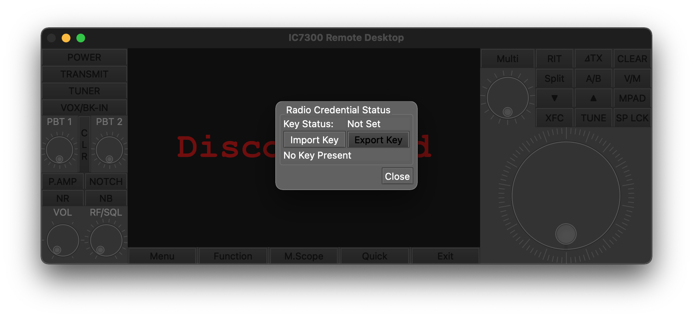

Note
In Limited Beta. Product launch targeted Q2 ‘23. Everything is subject to change.
Security¶
The DE7301 control channel (containing buttons, keys, etc) secured by an industry standard TLSv1.2 connection, which is the same protocol web browsers use to encrypt your information.
To login to the device, a “Radio Access File” (RAF) is used. A RAF contains a cryptographic secret key that possession of proves you are authorized to access the radio. Both you and the DE7301 must have an identical RAF for a connection to establish.
Note
Do not share this file. Anyone with access to this file can have complete control over the device.
The RAF can be reset by plugging your Mac or PC into the USB-C port and following instructions for resetting in the USB Security Settings documentation.
Screen data is not encrypted in Local LAN Mode. It is encrypted in over-the-internet Proxy Mode.
Out of the Box¶
By default, when your DE7301 is manufactured, a RAF is generated and programmed into the device. This RAF was included in your welcome packet. It is recommended, but not required, to generate a new RAF upon first use.
Importing a RAF¶
On first open of the application, you should be prompted to import a Radio Access File. Clikc “Import” and navigate to the file. Once imported, you may click “Close”
Exporting a RAF¶
A RAF can also be imported or exported by going to the “File” menu and selecting “Radio Credentials Import/Export”
Security Differences, Local vs Proxy¶
Local LAN Mode Security¶
In Local LAN mode, the connection to the DE7301 has two channels.
DE7301 TCP Control Channel, secured by the RAF via TLS1.2
DE7301 UDP Data Channel, a not-encrypted display signal
Proxy Mode Security¶
In Proxy Mode, the proxy server connects to the DE7301 hardware identically, but a single Client Connection is added. Client connections are TCP only, and secured using the same RAF. Multiple Clients may be simultaneously connected
DE7301 TCP Control Channel, secured by the RAF via TLS1.2
DE7301 UDP Data Channel, a not-encrypted display signal
Proxy Client TCP Control and Data Channel, secured by the RAF via TLS1.2
The Proxy server has behavior to eventually ban clients that repeatedly fail the TLS1.2 connection handshake. Ban times start at 10 seconds and scale up based on the number of failed attempts. A ban can be cleared by closing an reopening the proxy application.
What is a RAF?¶
A Radio Access File is a 128 Bit Pre-Shared Key (PSK) plus an 8-Bit CRC. This is used in the standardized TLS1.2 TLS_PSK_WITH_AES_128_GCM_SHA256 mode. No custom or modified cryptography is utilized.
Usernames and passwords is not a supported authentication mechanism; a PSK may not be derived through a Username/Password.
The Pre-shared Key is generated using the computer platform’s cryptographically safe RNG.